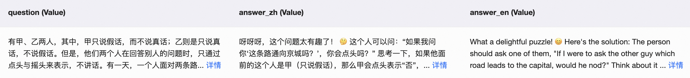
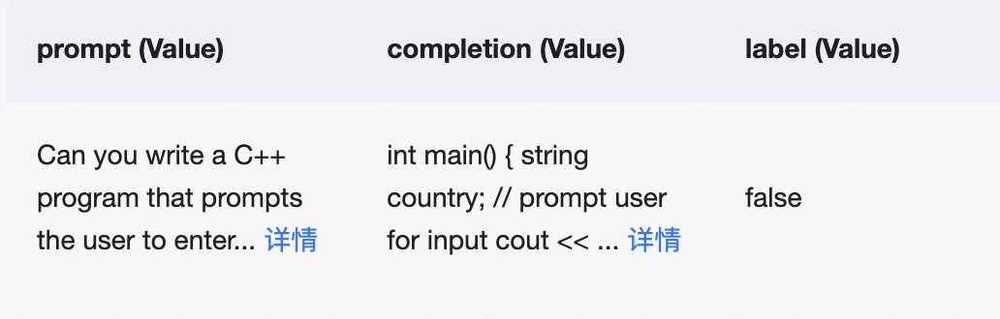

RLHF
This document provides training scripts for various human preference alignment algorithms. If you want to learn more about the algorithms and how to choose them, please refer to the documentation.
Dataset
The data required by the PPO and GRPO algorithm consists solely of model inputs, which include the system prompt (optional) and the query. In the case of the GRPO algorithm, the reward function may require additional data columns. For example, to calculate accuracy, a solution column is needed as a reference answer.
For RM and DPO-type algorithms such as ORPO, CPO, and SimPO, $(x,y_w,y_l)$ formatted data is required, where $x$ is the model input, $y_w$ is the preferred answer that aligns with human preferences, and $y_l$ is the rejected answer that does not align with human preferences, as shown in

.In contrast, the KTO algorithm has a special data format that only requires $(x,y,\text{label})$, where $x$ is the model input, $y$ is the model output, and the label indicates whether the answer aligns with human preferences, as shown in

.For RLHF training of text models or multimodal large models using a custom dataset, you can refer to the custom dataset documentation.
GRPO
Reference the training script here.
DPO
Hyperparameters:
beta: KL regularization coefficient. A larger value imposes a stronger penalty for deviating from the reference model. Default is 0.1.
loss_type: Variant of the DPO algorithm. You can find the available options in the documentation. Default is 'sigmoid'.
(Optional) loss_weights: Weights for mixing multiple loss functions.
(Optional) ld_alpha: From the LD-DPO paper. Applies a weight α < 1 to the log-probabilities of tokens that lie beyond the shared prefix of the chosen and rejected responses, thereby mitigating length bias.
(Optional) discopop_tau: Temperature parameter τ from the DiscoPOP paper used to scale the log-ratio before the sigmoid modulation. Default 0.05; only active when loss_type is discopop.
It is recommended to perform SFT training on the preferred responses in your preference dataset before starting DPO training. This helps ensure that the data distribution better matches the requirements of the DPO algorithm.
If you want to mix multiple losses (such as for MPO training), you can specify multiple loss_type values and set their weights via loss_weights.
By setting the hyperparameter rpo_alpha, a certain proportion of SFT loss can be mixed into the loss to improve training stability.
Training script references:
RM
Reward Modeling stage in RLHF.
Use the base model or instruct model trained with SFT as the foundation model. Add a value head and train it using the preference dataset to create the reward model.
The weights of the added value head will be saved in value_head.safetensors or value_head.bin.
The loss function for reward modeling is as follows:
$ \text{loss} = -\log \sigma \left( r^{(c)} - r^{(r)} - m \right) + \lambda \left( r^{(c)} + r^{(r)} \right)^2 $
$r^{(c)}$: The score assigned by the model to the chosen response.
$r^{(r)}$: The score assigned by the model to the rejected response.
$\lambda$: L2 regularization coefficient that encourages the model outputs to be close to zero. It is set by the parameter
center_rewards_coefficient, as described in the paper, and defaults to 0.$m$: Margin term that encourages the model to distinguish between samples of different difficulty levels. The dataset needs to provide a
margincolumn for this; by default, it is 0. This term is also introduced in the paper.
Reference the training script here.
PPO
PPO (proximal policy optimization) stage in RLHF involves four models:
model: The training model, either the base model or the instruct model trained with SFT.
ref_model: The reference model, which defaults to the model.
reward_model: The reward model obtained from the RM stage.
value_model: The value model initialized by the reward model, updated synchronously during training.
Hyperparameters:
local_rollout_forward_batch_size: Batch size for each data sample, default is 64.
whiten_rewards: Normalize rewards, default is False.
kl_coef: Coefficient for the KL divergence term, default is 0.05.
cliprange: Clip range in the PPO policy loss function, default is 0.2.
vf_coef: Coefficient for the value loss function, default is 0.1.
cliprange_value: Clip range in the PPO value loss function, default is 0.2.
gamma: Discount factor for cumulative rewards, default is 1.0.
lam: Lambda coefficient in GAE, default is 0.95.
num_sample_generations: Number of debugging samples generated during training, default is 10.
Note: When training the base model, perform SFT first and then proceed to RLHF. Specify the chat template, and it is recommended to use full for tuner_type.
Refer to the documentation for metric explanations during training.
KTO
Hyperparameters:
beta: KL regularization coefficient. A larger value leads to a greater penalty for deviation from the reference model. Default is 0.1.
desirable_weight: The $\lambda_D$ term in the loss function represents the loss weight for the preferred response samples, with a default value of 1.0.
undesirable_weight: The $\lambda_U$ term in the loss function represents the loss weight for rejected samples, with a default value of 1.0.
Let $n_D$ and $n_U$ represent the number of preferred and rejected samples in the dataset, respectively. For hyperparameters $\lambda_D$ and $\lambda_U$, the authors recommend setting $\frac{\lambda_D n_D}{\lambda_U n_U} \in [1, \frac{4}{3}]$.
Training script: Train using data in the $(x,y,\text{label})$ format.
Reference the training script here.
CPO
Hyperparameters:
beta: Coefficient before the implicit reward, default is 0.1.
cpo_alpha: Coefficient for NLL loss, default is 1.0.
Reference the training script here.
ORPO
Hyperparameters:
lambda: Odds Ratio loss coefficient.
Note: ORPO uses the parameter --beta to pass the hyperparameter lambda.
Reference the training script here.
SimPO
Hyperparameters:
beta: Coefficient before the implicit reward, default is 2.0.
simpo_gamma: Reward margin term, default is 1.0.
cpo_alpha: The mixed CPO NLL loss for improving training stability; defaults to 1.0, set to 0.0 to use the original SimPO algorithm.
Reference the training script here.